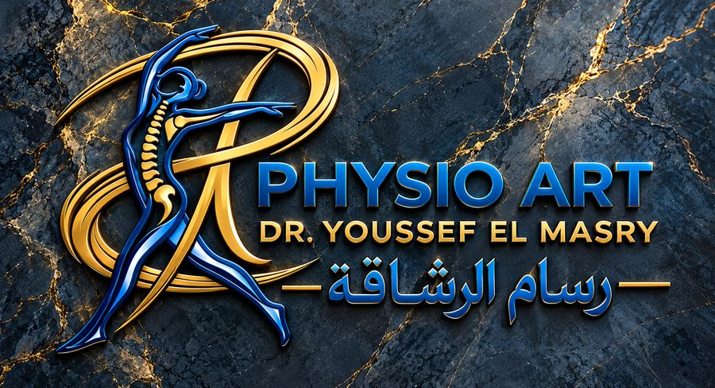

د. يوسف المصري · رسام الرشاقة
Physio Art للعلاج الطبيعي والتأهيل والتغذية العلاجية
رعاية متخصصة تبدأ بفهم حالتك، وتُبنى على احتياجاتك، وتهتم بتقدمك.
العلاج الطبيعي والتأهيل، إلى جانب برامج التخسيس والتغذية العلاجية، ضمن منظومة خدمات متكاملة هدفها دعم الحركة الصحية وتحسين نمط الحياة.

منهجية الرعاية في Physio Art
مسار العلاج
التقييم السريري الدقيق
فهم طبيعة الشكوى الحركية أو الغذائية وتحديد الأسباب الجذرية قبل البدء في أي إجراء.
خطة علاجية فردية
برنامج تأهيلي أو غذائي مخصص يناسب طبيعة جسمك، وحالتك الصحية، ونمط حياتك اليومي.
المتابعة وتطوير الخطة
قياس الاستجابة بشكل دوري وتعديل الخطة العلاجية للوصول إلى أفضل نتيجة مستدامة.
01العلاج الطبيعي والتأهيل
رعاية حركية تبدأ بالتقييم الدقيق
الألم وتراجع القدرة على الحركة لا يحتاجان إلى حلول مؤقتة فقط، بل إلى فهم طبيعة الحالة وتحديد أهداف واضحة للتعامل معها. في Physio Art نركز على تقييم الاحتياجات الحركية، ووضع خطة علاج وتأهيل مناسبة لكل حالة، مع متابعة الاستجابة وتطوير الخطة وفقًا للتقدم.
العظام والعمود الفقري
حالات الانزلاق الغضروفي، وخشونة المفاصل، والشوكة العظمية، والتأهيل بعد الكسور والعمليات الجراحية وتغيير المفاصل.
التأهيل العصبي
برامج تأهيل للحالات العصبية، تشمل الجلطات، والعصب السابع، والتصلب المتعدد، وإصابات الحبل الشوكي، لاستعادة الوظائف العصبية والحركية تدريجيًا وفقًا للتقييم.
الإصابات الرياضية
تأهيل إصابات العضلات والأربطة ومشكلات الركبة والكتف، بهدف استعادة الوظيفة الحركية والعودة الآمنة والتدريجية للنشاط البدني.
صحة المرأة والأطفال
خدمات تراعي المرحلة العمرية والصحية، وتشمل آلام الحمل وما بعد الولادة، وتأخر النمو الحركي والجنف لدى الأطفال، بحسب احتياجات الحالة.
العلاج اليدوي والتقنيات المساندة
دمج مدروس بين المهارات العلاجية اليدوية والتقنيات الحديثة، تُختار وتُوظَّف بدقة وفقًا لطبيعة الحالة ومدى ملاءمتها السريرية.
02التخسيس والتغذية العلاجية
إدارة الوزن تبدأ بخطة تناسبك
الوصول إلى وزن مناسب لا يعتمد على نظام غذائي واحد يناسب الجميع. احتياجات الجسم، ونمط الحياة، والأهداف، والاستجابة للتغيير، كلها عوامل تؤثر في اختيار الخطة. نعتمد على تقييم مكونات الجسم، وتنظيم التغذية وفق الاحتياجات الفردية، ومتابعة التقدم لتعديل الخطة عند الحاجة.
قياس مكونات الجسم
قياس InBody لتكوين صورة أشمل عن الوزن، ونسب الدهون، والكتلة العضلية، ومعدلات الحرق، وفقًا لإمكانات القياس المتاحة.
التغذية الفردية
خطة غذائية تراعي احتياجاتك الصحية وعاداتك اليومية، مع التركيز على الاستمرارية والتوازن دون حرمان قاسٍ.
المتابعة والتقييم
مراجعة التقدم دوريًا وتقييم التغيرات في تكوين الجسم، وتعديل الخطة وفقًا لاستجابة الجسم الفعلية.
خدمات نحت القوام
تقييم مدى ملاءمة أجهزة نحت القوام الموضعي لأهدافك وحالتك، كخدمة مساندة للخطة الغذائية وليست بديلًا عنها.
03التقنيات والخدمات المساندة
اختيار الخدمة المناسبة يبدأ من احتياجك
تضم العيادة منظومة من تقنيات وأجهزة العلاج الطبيعي، إلى جانب أجهزة مخصصة لجلسات نحت القوام الموضعي.
توظيف مبني على التقييم
يُحدَّد استخدام كل تقنية أو جهاز وفقًا لطبيعة الخدمة، واحتياجات الحالة، ومدى ملاءمته الطبية.
الشفافية السريرية
الاختيار السريري يسبق أي إجراء، ونوضح لك الأجهزة المقترحة ودورها الفعلي في خطتك خلال جلسة الكشف والتقييم.
04عن Physio Art
نهج واضح في الرعاية والمتابعة
تجمع Physio Art بين خدمات العلاج الطبيعي والتأهيل، والتخسيس والتغذية العلاجية، مع الاهتمام بتحديد احتياجات كل شخص وتوضيح الخطوات المقترحة للتعامل معها.
نؤمن بأهمية التقييم المناسب، ووضوح الخطة، ومراجعة التقدم، حتى يكون المريض على دراية بهدف كل خطوة في خطته العلاجية.
Physio Art — رعاية تبدأ بالتقييم، وتستمر بالمتابعة.
05الأسئلة الشائعة
إجابات واضحة قبل زيارتك للعيادة
ماذا يحدث في جلسة الكشف والتقييم الأولى؟
نبدأ بالاستماع إلى شكواك وتاريخك الصحي، ومراجعة أي فحوصات أو أشعة سابقة، ثم نجري فحصًا حركيًا أو قياسًا لمكونات الجسم في حالات التغذية. وبناءً عليه نوضح لك طبيعة الحالة، والخطة العلاجية المقترحة، والمدة المتوقعة للتحسن.
ماذا أحضر معي في الموعد الأول؟
يُفضّل إحضار أي تقارير طبية، أو أشعة (رنين أو مقطعية أو أشعة عادية)، أو تحاليل حديثة مرتبطة بحالتك، مع ارتداء ملابس مريحة تسهّل الفحص الحركي أو جلسة العلاج.
كم عدد الجلسات التي سأحتاجها؟
يختلف العدد من شخص لآخر بحسب طبيعة الحالة وشدتها ومدى الالتزام بالتعليمات والتمارين المنزلية. نحدد العدد المبدئي بعد جلسة التقييم الأولى، ونراجع التقدم بانتظام.
هل أنظمة التغذية تعتمد على الحرمان القاسي؟
لا. خطط التغذية في Physio Art مبنية على التوازن والمرونة بما يناسب مجهودك اليومي وحالتك الصحية، لنزول صحي وآمن للوزن مع الحفاظ على الكتلة العضلية وتقليل فرصة رجوع الوزن.
هل جلسات نحت القوام تغني عن النظام الغذائي؟
أجهزة نحت القوام وسيلة مساندة للتعامل مع الدهون الموضعية وتحسين مظهر الجسم، لكنها تعطي أفضل نتيجة عندما تكون جزءًا من خطة متكاملة لإدارة الوزن وتنظيم التغذية.
هل يُشترط الحجز المسبق قبل الحضور؟
نعم، يُرجى التواصل هاتفيًا أو عبر واتساب لتأكيد الموعد قبل الحضور، لتنظيم المواعيد وتخصيص الوقت الكافي لتقييم حالتك دون انتظار طويل.
06الفروع والمواعيد
اختر الفرع المناسب لك
كل يوم في الأسبوع فيه فرع مفتوح.
يُرجى التواصل لتأكيد الموعد قبل الحضور.
فرع حلوان — الكورنيش
كورنيش منشية جمال عبد الناصر، بجوار كشري العملاق، مدخل شارع محل فلاش، أعلى محل كريم البطل للدواجن.
07التواصل والحجز
احجز موعدك في Physio Art
سواء كنت تبحث عن تقييم لمشكلة حركية، أو ترغب في بدء خطة للتخسيس والتغذية العلاجية، تواصل معنا لتحديد الخدمة المناسبة والفرع المتاح.